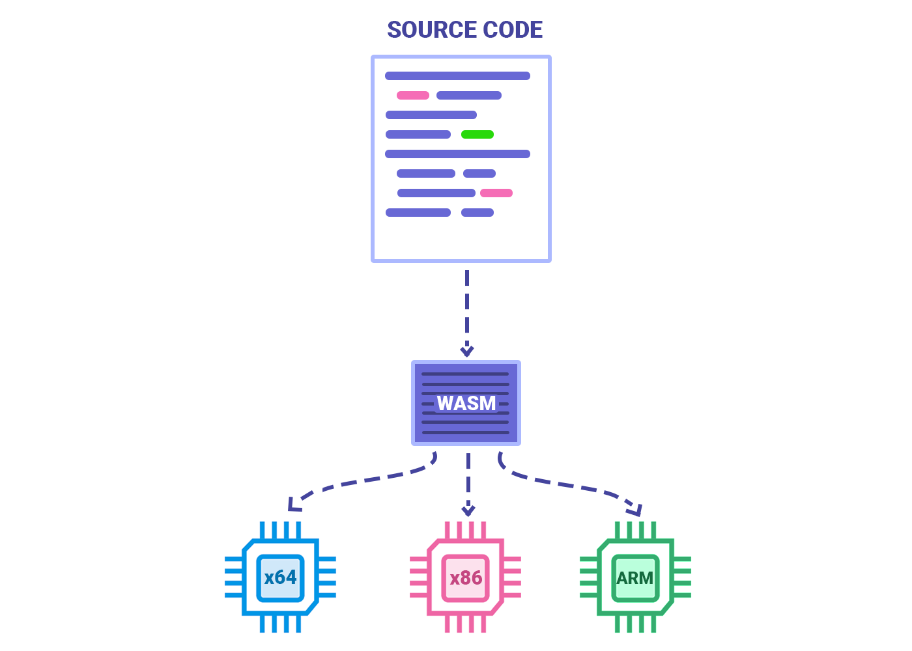
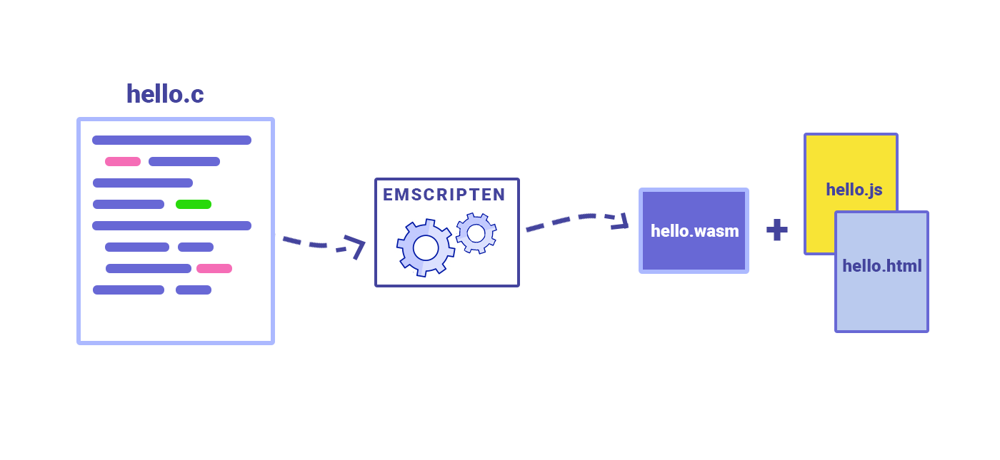

Въведение
През последните около 10-20 единственият език, който се е използвал без никакъв проблем от браузърите, е бил JavaScript. Всички допълнения към браузарите, които позволяват други езици да се изпълняват в браузера, започнали бавно да умират - примери за това са Java и Flash's Action Script. Всички останали езици за уеб програмиране като например TypeScript и CoffeeScript се компилират до JavaScript.
След 2017 година възниква нов начин за създаване на уеб приложения - WebAssembly или WASM за краткост. Целта на Wasm не е да замени JavaScript, а по-скоро да бъде като алтернативен начин за създаване на уеб приложения. В същото време, Wasm позволява всички езици да бъдат използвани за създаване на приложения, включително и JavaScript.
Какво представлява
Езикът Assembly представлява език за програмиране от ниско ниво, чиято цел е да комуникира директно с хардуера на устройството. За разлика от машинния код, който е съставен от двоични и шестнайсетични символи, Assembly е четим от хора. Също така езиците за програмиране от ниско ниво са връзката между езици за програмиране като Python, C++, C# и хардуера на компютъра.
Wasm представлява двоичен код, който е много близо до Assembly. Също така WASM не зависи нито от езика, нито от платформата на който се разработва дадено приложение, защото WebAssembly може да бъде компилиран от други езици и може да бъде изпълняван от браузер или виртуална машина. Също така WebAssembly е отворен стандарт, чиято главна цел е да предостави възможно най-голяма близост до производителността на Assembly в браузера и в същото време да поддържа съвместимост със сегашните екосистеми и стандарти.
Основни концепции
Част от основните концепции на Wasm са:
- Модулярност - Wasm може да бъде разделен на модули, за да бъде компилиран от браузъра или виртуалната машина.
- Стек машина - Wasm работи на принципа на инструкциите. От своя страна, инструкциите позволяват контрол над циклите, аритметичните операции и достъпа до паметта.
Функционалности
- Wasm е език от ниско ниво, който не се пише от хора, но може да компилира всички езици - C, C++, Rust, etc.
- Wasm се представя в двоичен формат и съдържа по-малко информация за сваляне като има и формат, четим от хора - WAT(WebAssembly Text). Пример за WAT може да бъде разгледан на Код 1.
- Двоичните файлове на Wasm се декодират и компилират до машинен код без нуждата от оптимизация, защото по време на генерирането на Wasm двоичните файлове са напълно оптимизирани.
(
module
(func $multiply (param $lhs i32) (param $rhs i32) (result i32)
get_local $lhs
get_local $rhs
i32.mul)
(export "multiply" (func $multiply))
)
Код 1 пример за WAT
Как работи
Въпреки своето име, WASM не се води точно assembly език, защото не зависи от това на каква машина ще бъде изпълняван кода. WASM е предназначен за браузeра и когато се предоставя код за изпълнение на браузера, не се знае на каква машина кодът ще работи. На следващата фигура е показано на най-високо ниво процесът на работа на Wasm.
Фигура 1. Процес на работа на Wasm на най-високо ниво
Начинът на работа на WASM, обяснен на най-високо ниво, е следният - дадено приложение се написва на определен език, след което компилаторът на WASM компилира всички файлове на приложението, като ги оптимизира до възможно най-голяма степен и го комплира също по такъв начин, че да не зависи от архитектура на машината, на която приложението ще работи.
Wasm се състои от файлове, които са четими от хората, и такива, които се изпълняват от браузърите. На следващата фигура това може да бъде разгледано.

Фигура 2. Файлове на Wasm
Wasm позволява на езици като C, C++ и други да бъдат компилирани до така наречените модули. Всеки модул може да бъде зареден в браузъра и да бъде използван от JavaScript. В допълнение, Wasm не е създаден да замени JavaScript, а да работи в синхрон с него. На следващата фигура това може да бъде разгледано.

Фигура 3. Работа на Wasm
Примерът, който ще бъде разгледан за това как работи WebAssembly, ще бъде програма, написана на C. Кодът, който ще се представи, може да бъде разгледан в секцията Код 2.
#include <stdio.h>
int main() {
printf("Hello World!\n");
return 0;
}
Код 2. Програма Hello World, написана на С.
За да бъде компилирана програмата с Wasm, е необходимо да се инсталира Emscripten. Изпълнявайки командата, показана в Код 3, ще бъдат генерирани един файл с разширение wasm, един html документ и един js файл.
emcc hello.c -o hello.html
Kод 3. Генериране на на файлове за изпълнение в браузъра.
По време на изпълнението се генерират html и js файловете, защото Wasm няма директен достъп до APIs на която и да е платформа - DOM, WebGL и други. Генерирането на файловете може да бъде разгледано на Фигура 4. След изпълнението на командата от Код 2, html файлът може да бъде отворен в браузър, зареждайки js файла, който зарежда wasm файла. Всеки wasm файл може да бъде разглеждан като модул от дадено приложение - може да бъде зареждан, изтеглен и изпълняван. Всеки браузър има възможността за зареждане и експортиране на тези wasm файлове, което позволява да се работи по същия начин както с обекти от JavaScript. В JavaScript Има функции, които могат да бъдат извикани от WebAssembly модулите, и WebAssembly функции, които могат да бъдат извикани от JavaScript код. Примитивните типове, които се предоставят, са всички числа. Предаването на сложни обекти между JavaScript и WebAssembly не е проста задача. Например, за да пердадем стринг между двете, трябва стрингът да се представи като масив от числа и след това да се подаде указател към този масив. Също така, WebAssembly може да чете и пише само от своята линейна памет и няма пряк достъп до външните JavaScript променливи, освен ако не се копират в паметта или подадени чрез call stack.
Фигура 4. Генериране на файлове за wasm
Примери
Blazor
Blazor WebAssembly представлява структура за изграждане на клиентски приложения, използвайки .NET. Също така позволява на разработчиците да използват C# и .NET за създаването на интерактивни и динамични страници, работещи в браузера без необходимостта от инсталирания на допълнения към браузера.
Blazor WebAssembly е изграден на база на WebAssembly, двоичен код, който може да бъде изпълнен в браузерите. Също използва комбинация от C# и .NET като предоставят модел за програмиране от високо ниво за изграждане на уеб приложения.
Едно от най-ключовите предимства на Blazor WebAssembly e, че позволява използването на един и същи език за програмиране и инструменти както за сървърната част, така и за клиентската част, позволявайки по-лесното създаване на full-stack .NET приложения, улеснявайки споделянето на код между сървъра и клиента.
Предимства
Предимства и недостатъци
В тази секция ще бъдат разгледани предимствата и недостатъците на WebAssembly.
Предимства
-
Многоплатформеност
Много от разработчиците се стремят към възмонжно най-голяма производителност за всяка платформа, но това изисква доста усилия от тяхна страна. WebAssembly изпъква най-много с функционалността, че код може да се напише на всякакъв език за програмиране, различен от JavaScript, и да се създаде уеб приложение. Портативността е една от най-изпъкващите характеристики на WebAssembly от самото начало, оптимизирайки ресурсите, които използва дадено уеб приложение.
-
Оптимизация
WebAssembly е статичен, което означава, че оптимизацията на кода се прилага преди да достигне до браузъра, което води по-добра производителност и оптимизация на времето. Това от своя страна води до по-висока производителност.
-
Бързодействие
.wasm файловете, които се генерират по време на компилирането, са много малки, което води до значително по-бързо време за зареждане и до по-висока скорост, с която уеб приложението работи.
-
Сигурност
Модулната система, с която работи WebAssembly, разделяйки уеб приложението на малки парчета, предпазва потребителя от възможни хакерски атаки. Начинът, по който е реализирано, е чрез изолиране на изпълнението на модулите.
Недостатъци
-
Липса на garbage collection
Един от най-големите недостатъци на WebAssembly е липсата на управление на паметта. Езици като WebAssembly не ползват garbage collector и се нуждае от механизми за управление на заделената памет.
-
Работа с DOM
Все още WebAssembly трябва да работи с JavaScript вместо да работи директно с DOM.
-
Сложност на езика
WebAssembly език от ниско ниво, което го прави по-труден за научаване, а това се явява пречка да стане толкова известен, колкото JavaScript.
Източници
- [1]Serdar Yegulalp, What is WebAssembly? The next-generation web platform explained, 27.05.2022
- [2]Luis Hernandez What Is WebAssembly And What Is It Used For?, unknown date
- [3]Milica Mihajlija, WebAssembly: How and why, 14.08.2018
- [4]Vaibhav Kumar, WebAssembly: Easy explanation with code example, 15.01.2020
- [5]ScoreDigital, WebAssembly vs JavaScript: Similarities, Differences & Pros And Cons, 29.08.2022
- [6]Jason Fernando, Assembly Language, 01.10.2022
- [7]WebAssemblyMan, WAT, Webassembly text format, unknown date
- [8]Bitezy Staff, WebAssembly Tools and Frameworks, 27.12.2022
- [9]Alex Jones, An introduction to Blazor WebAssembly, 02.02.2021